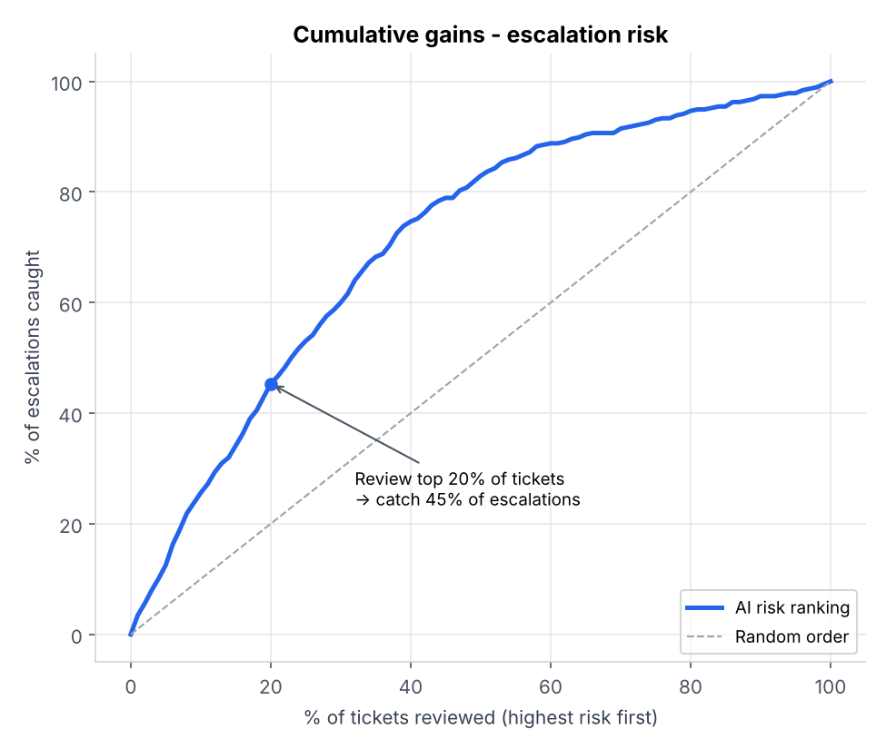

Support Ticket AI
A support team handles ~1,500 tickets a month, routes them by hand and sees one in four escalate to a manager. I built three models that route each ticket, read the customer's mood and flag the ones likely to escalate, so team leads can step in early.
92%routing accuracy across 6 teams
45%of escalations caught in the riskiest 20% of tickets
58%escalation rate on a 3rd+ contact vs 10% on the first
- Cleaned a 9,120-row CRM export: duplicates, three date formats, 559 inconsistent labels, impossible response times
- Wrote 8 KPI queries in SQL with CTEs and window functions
- Compared Naive Bayes, Logistic Regression and Linear SVM with a time-based train/test split
- Shipped a Streamlit app: live ticket analyser, ops dashboard, CSV batch scoring
pandasscikit-learnTF-IDFSQLiteStreamlitPlotly
